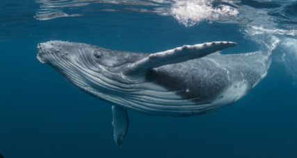
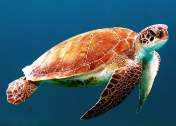
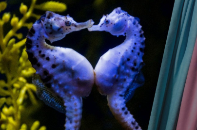

| animales | descripcion | imagen |
|---|---|---|
| NUTRIA | Los lutrinos, conocidos comúnmente como nutrias, son una subfamilia de mamíferos placentarios carnívoros de la familia Mustelidae. Actualmente existen trece especies de nutrias repartidas en siete géneros, con una distribución de la población prácticamente mundial. | |
| FOCA | Los fócidos o focas verdaderas son una familia de mamíferos pinnípedos adaptados a vivir en medios acuáticos la mayor parte del tiempo.El nombre común deriva directamente del latín phoca, que a su vez tiene su origen en el griego φώκη.Se conocen 33 especies. | |
| BALLENA |
Las ballenas son un grupo diverso y ampliamente distribuido de mamíferos marinos placentarios totalmente acuáticos.
Como agrupación informal y coloquial,corresponden a grandes miembros del infraorden Cetacea,
es decir, todos los cetáceos excepto delfines y marsopas.

| |
| TORTUGAS |
Los quelonioideos son una superfamilia de tortugas que comprende las tortugas marinas.
Consta de dos familias actuales: Cheloniidae y Dermochelyidae, que incluyen siete especies vivas.
 | |
| CABALLITO DE MAR |
Hippocampus es un género de peces marinos conocidos como caballitos de mar o hipocampos.
El género pertenece a la familia Syngnathidae, que también incluye a los peces pipa.

|
|